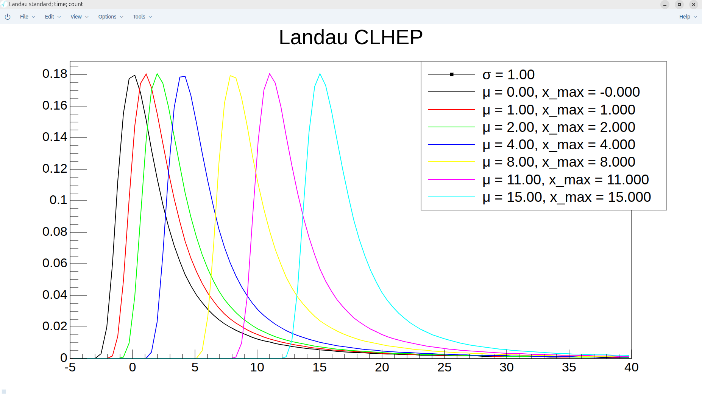
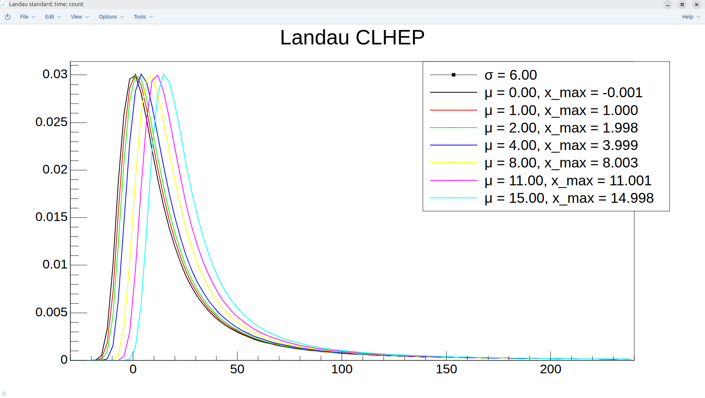
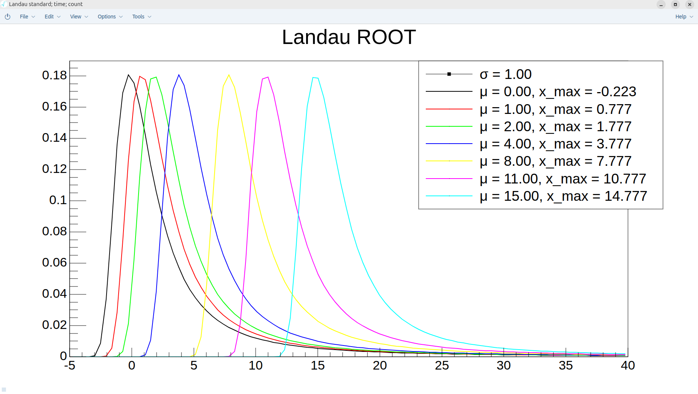
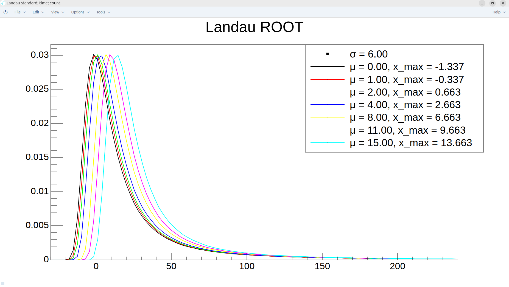

Landau in ROOT vs Landau in CLHEP
Lognumber 40.
Submitted on Sun, 17 Aug 2025 - 00:25:44 CEST
Marker: simulation
Send to:
In CLHEP, x_max does not depend on sigma and is pretty accurate: x_max == mu
In ROOT, x_max = mu - 0.22*sigma
The comparaison done with sigma = 1 and 6.
It is very important to take into account as in GEMC we use CLHEP instead of ROOT.
Attachments (4)
1.

2.

3.

4.
